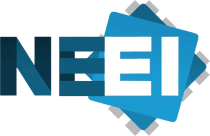

<CANDIDATURA: FARO_2027 />
ENEI 2027
Encontro Nacional de Estudantes de Informática
1 – 4 Abril 2027 · Faro, Algarve
Desliza para ver mais ↓
<SOBRE />
O que é o ENEI?
O Encontro Nacional de Estudantes de Informática é o maior evento académico anual da área em Portugal. Reúne estudantes de universidades de todo o país durante 4 dias de imersão tecnológica, networking, palestras, workshops e muito mais. Em 2027, Faro candidata-se a ser o palco desta experiência.
<VALORES />
Os nossos pilares
Conhecimento
Transferência de saber técnico e crítico em áreas como Inteligência Artificial, Cibersegurança, Engenharia de Software e outras vertentes da Informática, através de workshops, palestras e sessões práticas com profissionais da área.
Networking
Ligação direta entre estudantes, empresas, profissionais e universidades. O ENEI é uma oportunidade única para construir contactos, descobrir oportunidades e integrar o ecossistema tecnológico nacional.
Cidadania
Promoção de Faro e do Algarve como polo tecnológico jovem, moderno e atrativo. Mostrar que o Sul tem capacidade, talento e ambição para organizar eventos de referência nacional na área da Informática.
<LOCALIZAÇÃO />
Porquê Faro?
- Universidade do Algarve prevista como espaço principal das atividades
- Escola Secundária Tomás Cabreira confirmada para alojamento
- Infraestruturas académicas de excelência para acolher eventos nacionais
- Cidade com história, cultura e um ecossistema tecnológico jovem e crescente
<ATIVIDADES />
Quatro dias para explorar.
De 1 a 4 de Abril em Faro. Descobre todas as oportunidades que o ENEI tem para te oferecer, desde sessões técnicas a momentos de networking inesquecíveis.
O que vais encontrar
Feira de Empresas
Encontra o teu próximo empregador ou estágio. Contacto direto com recrutadores e empresas da área tecnológica.
Workshops
Sessões práticas e intensivas em grupos reduzidos, guiadas por profissionais. Aprende fazendo.
Palestras
Apresentações por profissionais, empresas e convidados nacionais e internacionais da área da Informática.
Tertúlias Académicas
Conversas informais com professores, investigadores e representantes de universidades de todo o país.
Tertúlia Digital
Encontro com criadores de conteúdo, influencers tech e figuras ligadas à tecnologia e ao digital.
Passeio Matinal
Atividade matinal de convívio e ligação à cidade de Faro e à região algarvia.
CTFs
Competições Capture The Flag ao longo do evento. Desafios, equipas e prémios para os melhores.
Entrosamento
Dinâmicas de integração, team building e convívio para aproximar participantes de todo o país.
<AGENDA />
Quatro dias de descoberta.
1 – 4 de Abril de 2027 — Faro, Algarve
QUINTA-FEIRA · 1 ABR
SEXTA-FEIRA · 2 ABR
SÁBADO · 3 ABR
DOMINGO · 4 ABR
<PROGRAMA />
Plano de Execução
4 dias de imersão tecnológica em Faro · 10:00 às 22:00
| ATIVIDADE | DESCRIÇÃO | PÚBLICO ALVO |
|---|---|---|
| Feira de Empresas | Feira de emprego com foco em recrutamento direto e contacto com empresas. | Empresas & Todos os participantes |
| Workshops | Sessões práticas de 10 a 15 pessoas com profissionais da área. | Estudantes |
| Palestras | Apresentações por profissionais de empresas nacionais e internacionais. | Todos os participantes |
| Tertúlias Académicas | Conversas informais com professores da Universidade do Algarve. | Estudantes |
| Tertúlia Digital | Encontro com influencers da área tech. | Estudantes |
| Sessão de relaxamento na praia ao nascer do sol. | Todos os participantes | |
| CTFs | Competições de Capture The Flag ao longo dos dias com prémios. | Todos os participantes |
| Atividades de Entrosamento | Atividades de team building e interação entre os participantes. | Estudantes |
<TEAM />
Quem organiza o ENEI 2027?
Logística
Gestão de espaços, alojamento e infraestruturas do evento.
Marketing & Comunicação
Identidade visual, redes sociais e comunicação externa.
Departamento Comercial
Parcerias com empresas, patrocinadores e apoios institucionais.
Atividades
Programação técnica, workshops, palestras e momentos sociais.
Tecnologia
Website, plataformas digitais e suporte tecnológico ao evento.
<PHOTO />
Foto da equipa
Placeholder para a foto de grupo da organização.
A candidatura é liderada por David Gonçalves, em colaboração com o NEEI, NEEC, LESTI, BioEng e outras estruturas da Universidade do Algarve. Uma equipa multidisciplinar com visão, organização e capacidade de execução para receber o ENEI 2027 em Faro.

<INTERESSE />
Mostra o teu interesse no ENEI 2027.
Ainda não há inscrições abertas. Deixa o teu nome e email para demonstrares interesse e ficares a par de todas as novidades.
Fica a par das novidades.
Ainda não há inscrições abertas. Deixa o teu nome e email para demonstrares interesse e seres dos primeiros a saber quando abrirmos as candidaturas para o ENEI 2027. Sem spam.
Porquê demonstrar interesse?
- Seres dos primeiros a saber quando abrimos candidaturas
- Receberes novidades sobre o programa e oradores
- Ajudares a mostrar que existe interesse real por parte do público
- Participares num dos maiores eventos de Informática de Portugal
<INFO />
Como podemos ajudar?
Encontra respostas às tuas perguntas sobre o ENEI 2027.
Candidatura
A candidatura para organizar o ENEI 2027 está em aberto. Após ser aprovada, as inscrições de participantes serão anunciadas oportunamente. Segue-nos nas redes sociais para ficares a par.
Ainda tens dúvidas?
A nossa equipa está disponível para responder a todas as tuas questões.